Released: October 13, 2011
Next Release: October 19, 2011
Heating Oil Outlook
Each October, the "shoulder" month when the seasonal peak in U.S. oil demand shifts from transportation to heating fuels, the U.S. Energy Information Administration (EIA) releases its outlook for winter heating fuels demand and household heating costs.
EIA expects households that heat primarily with oil to spend an average of $2,493 this winter heating season (October 1 through March 31) (Table 1). According to EIA projections from the October 2011 Short-Term Energy and Winter Fuels Outlook, residential heating oil prices this winter are expected to average about $3.71 per gallon, $0.33 per gallon (10 percent) higher than last winter and the highest average winter price on record. Taking account of a 1 percent decline in average heating oil use, average fuel bills for households that use heating oil are expected to rise by 8 percent.
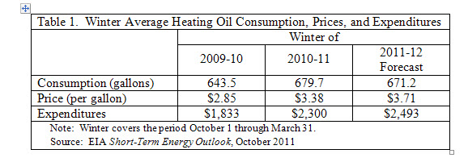
Weather is the main driver of seasonal space heating demand and is therefore a key factor behind heating fuel expenditures. The National Oceanic and Atmospheric Administration (NOAA) projects population-weighted U.S. heating degree-days in the Northeast (New England and Central Atlantic), the location of about 80 percent of all households that use oil as their primary space heating fuel, will be about 1 percent lower this heating season than last winter. Heating degree-day projections vary between regions. For example, the South, where electricity is the main heating source, is projected to be about 5 percent warmer than last winter, while the West is projected to be about 3 percent colder. Underlying these short-term effects, longer-term factors have been impacting heating oil demand, including changes in home size and fuel efficiency and continued penetration of the home-heating market by natural gas and electricity at the expense of oil.
The other major factor behind heating fuel expenditures is heating oil prices. Crude oil prices are a major determinant of heating oil prices, and demand relative to heating fuel supply impacts price levels over and above crude oil costs. This year, crude oil prices are expected to be 9% higher compared with last winter, putting upward pressure on heating oil prices and offsetting the impact of falling demand. Crude oil price forecasts are very uncertain. For example, in October 2010, EIA projected that the average cost of crude oil to U.S. refiners would be $78 per barrel during the 2010-11 heating season. Actual prices, however, were higher. The average cost of crude oil to U.S. refiners rose during the winter to average $82 per barrel in the fourth quarter of 2010 and $94 per barrel in the first quarter of 2011. Among other factors, this increase was due to a recovering global economy and rising global crude oil demand in late 2010 and the loss of 1.5 million barrels per day (bbl/d) of exports from Libya in the first quarter of 2011.
The balance between demand and supply is reflected in inventory levels. For example, lower than typical levels reflect higher demand than production and imports can supply, which, in turn, indicates upward pressure on prices. Distillate fuel inventories help meet normal peak demand during the winter months and are also a cushion for unexpected cold snaps that create sudden demand surges. Figure 1 shows total distillate inventories for the New England (PADD 1A) and Central Atlantic (PADD 1B) regions, areas where about 80% of U.S. households that primarily heat with heating oil are located. Currently, inventories are in the typical range for both regions.
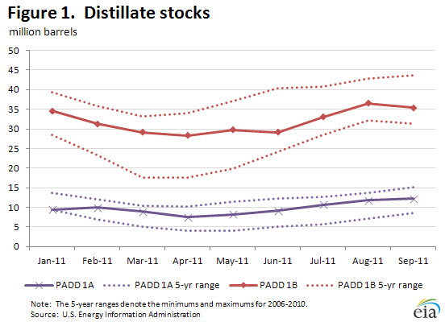
Availability of refinery capacity on the East Coast should be about the same as last winter, even though Sunoco and ConocoPhillips recently offered to sell three refineries in the Philadelphia area and announced that the facilities may close if no reasonable offers are received. The two Sunoco refineries, Marcus Hook and Philadelphia, are expected to operate at normal levels through the upcoming winter. ConocoPhillips has indicated it is already beginning the process of idling its Trainer refinery, which has a capacity of 185,000 bbl/d, or about 13 percent of operating refining capacity (excluding asphalt plants) on the East Coast. However, even the total idling of the Trainer refinery this winter would not reduce total operable refining capacity on the East Coast below last winter's level, since the 182,000 bbl/d Delaware City refinery that did not operate last winter was restarted this past summer by its new owner, PBF Energy, and will be operating this winter.
Over the winter, any unexpected production losses at East Coast refineries can be made up from other refineries in the area running at higher utilizations, from Gulf Coast supply, and from imports. Distillate fuel inventories on the Gulf Coast are higher than typical levels to start the winter season. In addition, distillate exports have been increasing from the Gulf Coast area, and opportunistic exports can be diverted to the Northeast should supplies tighten and prices increase. However, Gulf Coast and import supplies would generally be one to three weeks away.
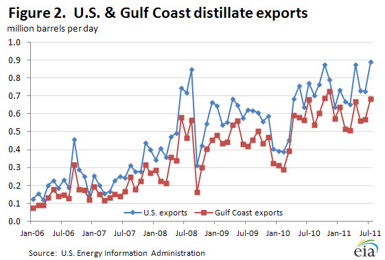
Finally, it is not clear whether we will see any early preparations to meet New York's ultra-low-sulfur specification for heating oil, which goes into effect in July 2012. This new specification could reduce the range of import sources available to meet supply, since many foreign refineries do not produce ultra-low-sulfur distillate. However, because the specification change does not take effect until next summer, this will likely be a larger issue for winter 2012/13 than for this winter.
Gasoline and diesel prices fall for five consecutive weeks
The U.S. average retail price of regular gasoline fell for the fifth straight week, declining over a penny to reach $3.42 per gallon. The average price is $0.60 per gallon higher than last year at this time. Prices fell in all regions but the Midwest. The East Coast had the biggest drop, about four cents per gallon, to put prices at $3.40 per gallon. The price in the Rocky Mountains fell almost three cents while the price on the West Coast fell just over two cents. The Gulf Coast average, still the lowest in the country, is at $3.22 per gallon after shedding about two cents on the week. Moving in the other direction, the Midwest price increased over a penny to put the average at $3.34 per gallon.
The national average diesel fuel price fell almost three cents to $3.72 per gallon. The diesel price is $0.66 per gallon higher than last year at this time. Diesel averages were down across all the regions, with the Gulf Coast posting the largest decrease (about four cents) to reach $3.65 per gallon. The Midwest followed with a decrease of almost 3 cents while the East Coast price fell over 2 cents. Both the Rocky Mountains and West Coast prices declined under two cents per gallon. The West Coast remains the most expensive region in the country at an average of $3.91 per gallon.
Propane stock build tapers off
Total U.S. inventories of propane gained slightly last week, adding 0.4 million barrels to end at 57.9 million barrels in total as the stock build season draws to an end. The East Coast region and Gulf Coast region both added 0.2 million barrels of inventory. Meanwhile, the Midwest and Rocky Mountain/West Coast stock levels were each up slightly. Propylene non-fuel use inventories represented 5.9 percent of total propane inventories.
Residential heating oil price fell slightly
Residential heating oil prices decreased during the period ending October 10, 2011. The average residential heating oil price slipped $0.01 per gallon last week to reach $3.68 per gallon, an increase of $0.73 per gallon from the same time last year. Wholesale heating oil prices increased by $0.10 last week to reach $2.97 per gallon; $0.61 per gallon more than last year at this time.
The average residential propane price increased slightly, by $0.01 per gallon, to reach $2.78 per gallon. This is a rise of $0.39 per gallon compared to the $2.39 per gallon average from the same period last year. Wholesale propane prices decreased by $0.05 per gallon, dropping from $1.57 per gallon to $1.52 per gallon. This was an increase of $0.20 per gallon when compared to the October 11, 2010 price of $1.33 per gallon.
Text from the previous editions of This Week In Petroleum is accessible through a link at the top right-hand corner of this page.
| 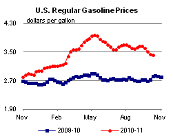 | 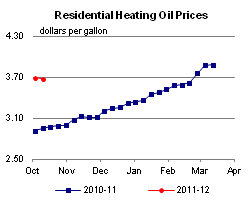 | ||||||
| 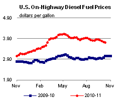 | 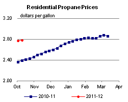 | ||||||
| Retail Data | Changes From | Retail Data | Changes From | ||||
| 10/10/11 | Week | Year | 10/10/11 | Week | Year | ||
| Gasoline | 3.417 | Heating Oil | 3.678 | ||||
| Diesel Fuel | 3.721 | Propane | 2.783 | ||||
| 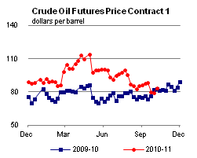 | 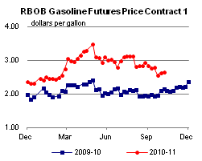 | ||||||||||||||||||||||||||
|
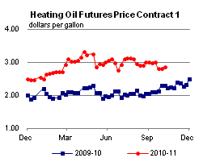 | ||||||||||||||||||||||||||
| *Note: Crude Oil Price in Dollars per Barrel. | |||||||||||||||||||||||||||
| 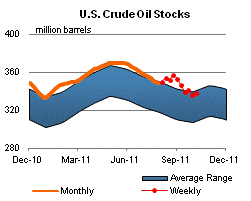 | 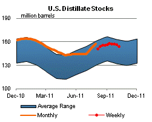 | ||||||
| 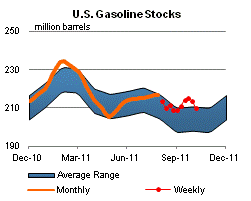 | 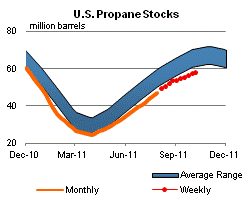 | ||||||
| Stocks Data | Changes From | Stocks Data | Changes From | ||||
| 10/07/11 | Week | Year | 10/07/11 | Week | Year | ||
| Crude Oil | 337.6 | Distillate | 154.0 | ||||
| Gasoline | 209.6 | Propane | 57.893 | ||||